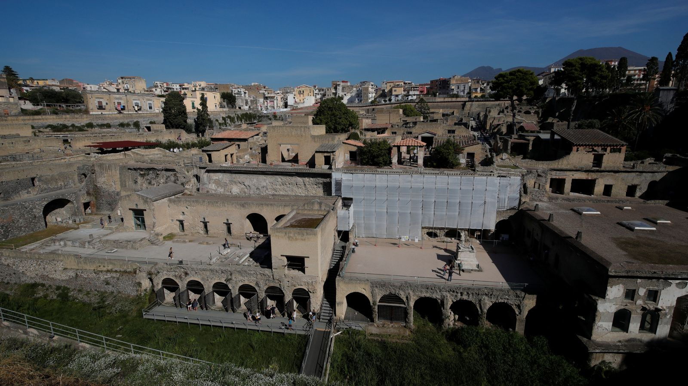

Papirusurile antice care au fost îngropate în cenușă după erupția Muntelui Vezuviu în anul 79 d.Hr. au fost citite pentru prima dată cu ajutorul inteligenței artificiale (AI).
Papirusurile Herculaneum sunt o colecție de aproximativ 1.800 de documente care, împreună cu mii de alte relicve, au fost carbonizate în timpul erupției vulcanice.
Situate în orașul Herculaneum - aproape de orașul Pompei, care a fost și el distrus - peste 800 de pergamente au fost extrase din ruinele unei case și sunt acum depozitate într-o bibliotecă din Napoli,iar in ciuda faptului ca numeroase eforturi au fost depuse pentru a se descifra textul acestora,nimeni nu a reusit pana acum.
Asta până când trei studenți au reușit să citească 15 coloane dintr-un papirus cu ajutorul unor tehnologii alimentate de AI.
Descoperirea a venit ca parte a Vezuvius Challenge - un concurs care a oferit un premiu de 1 milion de dolari pentru a ajuta la rezolvarea problemei.
(Muntele Vezuvius)
Youssef Nader din Germania, Luke Farritor din SUA și Julian Schilliger din Elveția vor împărți acum marele premiu de 700.000 de dolari după ce au citit mai mult de 2.000 de din pergament.
„Aceste cincisprezece coloane provin de la sfârșitul primului sul pe care l-am putut citi și conțin text nou din lumea antică, care nu a mai fost văzut până acum”, Nat Friedman, unul dintre organizatorii competiției.
El a spus că a fost scris probabil de filozoful epicurean Philodemus, care a scris despre „muzică, mâncare și cum să te bucuri de plăcerile vieții”.
(Sit arheologic din Herculaneum)
„Descifrarea virtuală” a documentului funcționează prin scanarea 3D a textului folosind scanarea CT (tomografie computerizata)
Pergamentul este apoi separat în segmente, iar regiunile cu cerneală sunt detectate de un model de învățare automată - o aplicație AI.
Descoperirea i-a uimit pe oamenii de știință și istorici, inclusiv pe profesorul academic și prezentator Alice Roberts, care a numit-o „descoperirea arheologică a vieții sale”.
Porțiunea de text descifrată echivalează cu doar 5% din unul dintre sulurile care a fost descoperite pana acum, a spus dl Friedman,existand mari sanse ca alte mii de papirusuri încă nedescoperite din Vila Papyri sa fie traduse.
„În 2024, obiectivul nostru este să citim câteva pasaje de text pe pergamente întregi și anunțăm un nou mare premiu de 100.000 USD pentru prima echipă care este capabilă să citească cel puțin 90% din toate cele patru suluri pe care le-am scanat„ a spus domnul Friedman